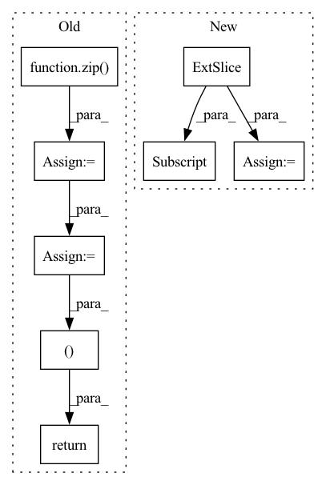

Pattern ID :12707
Before Change
predicts = [self.text_process.int2text(sent) for sent in predicts]
targets = [self.text_process.int2text(sent) for sent in targets]
list_wer = torch.tensor(
[self.cal_wer(i, j).item() for i, j in zip( predicts, targets) ]
)
wer = torch.mean(list_wer)
if batch_idx % 100 == 0:
self.log_output(predicts[0], targets[0], wer)
self.log("test_loss", loss)
self.log("test_batch_wer", wer)
return loss, wer
def log_output(self, predict, target, wer):
print("=" * 50)
print("Sample Predicts: ", predict)After Change
def test_step(self, batch: Tensor, batch_idx: int):
inputs, input_lengths, targets, target_lengths = batch
targets_ctc = targets[:, 1:-1]
outputs, output_lengths = self(inputs, input_lengths)
loss = self.criterion(
outputs.permute(1, 0, 2), targets_ctc, output_lengths, target_lengths
)
self.log("test loss", loss)
if batch_idx % self.log_idx == 0:
label_sequences, predict_sequences, wer = self.get_wer(
targets_ctc, inputs, input_lengths
)
self.log_output(predict_sequences[0], label_sequences[0], wer)In pattern: SUPERPATTERN
Frequency: 3
Non-data size: 8
Instances Fragment ID: 43021457
Project Name: manhph2211/vistt
Commit Name: 742be9424d91058a3c3e25adc4db742534fffab3
Time: 2022-08-30
Author: manhph5@vingroup.net
File Name: VASR/local/src/engine/trainer.py
M Class Name: ConformerModule
N Class Name: ConformerModule
M Method Name: test_step(3)
N Method Name: test_step(3)
M Parent Class: BaseModel
N Parent Class: pl.LightningModule
M File Name: VASR/local/src/engine/trainer.py
N File Name: VASR/local/src/engine/trainer.py
M Start Line: 105
M End Line: 136
N Start Line: 128
N End Line: 148
Before Change
def extract_events(self, raw_edf):
// all events
events = np.array(
list(zip( raw_edf.info["gdf_events"][1], raw_edf.info["gdf_events"][2]) )
)
// only trial onset events
trial_mask = [ev_code in [769, 770, 771, 772, 783] for ev_code in events[:, 1]]
trial_events = events[trial_mask]
assert len(trial_events) == 288, "Got {:d} markers".format(len(trial_events))
// event markers 769,770 -> 1,2
trial_events[:, 1] = trial_events[:, 1] - 768
// possibly overwrite with markers from labels file
if self.labels_filename is not None:
classes = loadmat(self.labels_filename)["classlabel"].squeeze()
trial_events[:, 1] = classes
unique_classes = np.unique(trial_events[:, 1])
assert np.array_equal(
[1, 2, 3, 4], unique_classes
), "Expect 1,2,3,4 as class labels, got {:s}".format(str(unique_classes))
// now also create 0-1 vector for rejected trials
trial_start_events = events[events[:, 1] == 768]
assert len(trial_start_events) == len(trial_events)
artifact_trial_mask = np.zeros(len(trial_events), dtype=np.uint8)
artifact_events = events[events[:, 1] == 1023]
for artifact_time in artifact_events[:, 0]:
i_trial = trial_start_events[:, 0].tolist().index(artifact_time)
artifact_trial_mask[i_trial] = 1
// mne expects events with 3 ints each:
events = np.zeros((len(trial_events), 3), dtype=np.int32)
events[:, 0] = trial_events[:, 0]
events[:, 2] = trial_events[:, 1]
return events, artifact_trial_mask
After Change
else:
trial_codes = [4] // "unknown" class
trial_mask = [ev_code in trial_codes for ev_code in events[:, 2] ]
trial_events = events[trial_mask]
assert len(trial_events) == 288, "Got {:d} markers".format(
len(trial_events)
)
trial_events[:, 2] = trial_events[:, 2] - 3
// possibly overwrite with markers from labels file
if self.labels_filename is not None:
classes = loadmat(self.labels_filename)["classlabel"].squeeze() Fragment ID: 43021459
Project Name: braindecode/braindecode
Commit Name: b63192caeb41424761592609c8d426b7ec23890b
Time: 2019-05-22
Author: robintibor@gmail.com
File Name: braindecode/datasets/bcic_iv_2a.py
M Class Name: BCICompetition4Set2A
N Class Name: BCICompetition4Set2A
M Method Name: extract_events(2)
N Method Name: extract_events(2)
M Parent Class: object
N Parent Class: object
M File Name: braindecode/datasets/bcic_iv_2a.py
N File Name: braindecode/datasets/bcic_iv_2a.py
M Start Line: 43
M End Line: 75
N Start Line: 44
N End Line: 90
Before Change
predicts = [self.text_process.int2text(sent) for sent in predicts]
targets = [self.text_process.int2text(sent) for sent in targets]
list_wer = torch.tensor(
[self.cal_wer(i, j).item() for i, j in zip( predicts, targets) ]
)
wer = torch.mean(list_wer)
if batch_idx % 100 == 0:
self.log_output(predicts[0], targets[0], wer)
self.log("val_loss", loss)
self.log("val_batch_wer", wer)
return loss, wer
def test_step(self, batch, batch_idx):
(
inputs,After Change
def validation_step(self, batch: Tensor, batch_idx: int):
inputs, input_lengths, targets, target_lengths = batch
targets_ctc = targets[:, 1:-1]
outputs, output_lengths = self(inputs, input_lengths)
loss = self.criterion(
outputs.permute(1, 0, 2), targets_ctc, output_lengths, target_lengths
)
self.log("test loss", loss)
if batch_idx % self.log_idx == 0:
label_sequences, predict_sequences, wer = self.get_wer(
targets_ctc, inputs, input_lengths
)
self.log_output(predict_sequences[0], label_sequences[0], wer) Fragment ID: 43021461
Project Name: manhph2211/vistt
Commit Name: 742be9424d91058a3c3e25adc4db742534fffab3
Time: 2022-08-30
Author: manhph5@vingroup.net
File Name: VASR/local/src/engine/trainer.py
M Class Name: ConformerModule
N Class Name: ConformerModule
M Method Name: validation_step(3)
N Method Name: validation_step(3)
M Parent Class: BaseModel
N Parent Class: pl.LightningModule
M File Name: VASR/local/src/engine/trainer.py
N File Name: VASR/local/src/engine/trainer.py
M Start Line: 72
M End Line: 103
N Start Line: 106
N End Line: 126